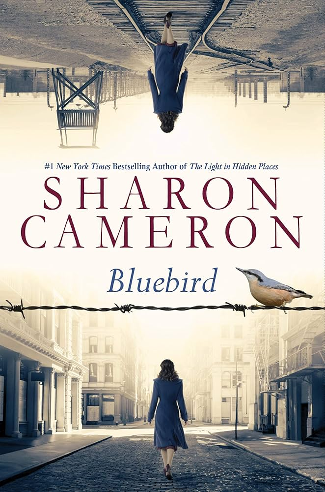
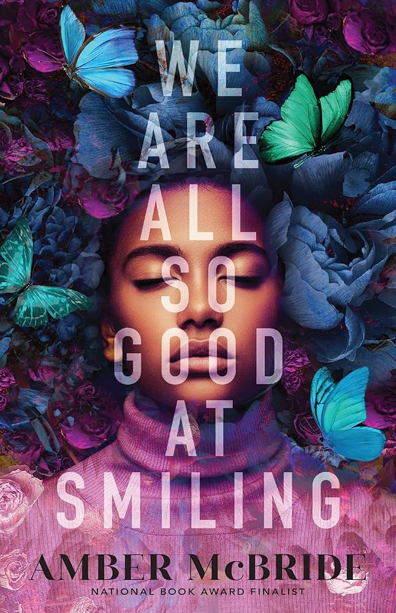
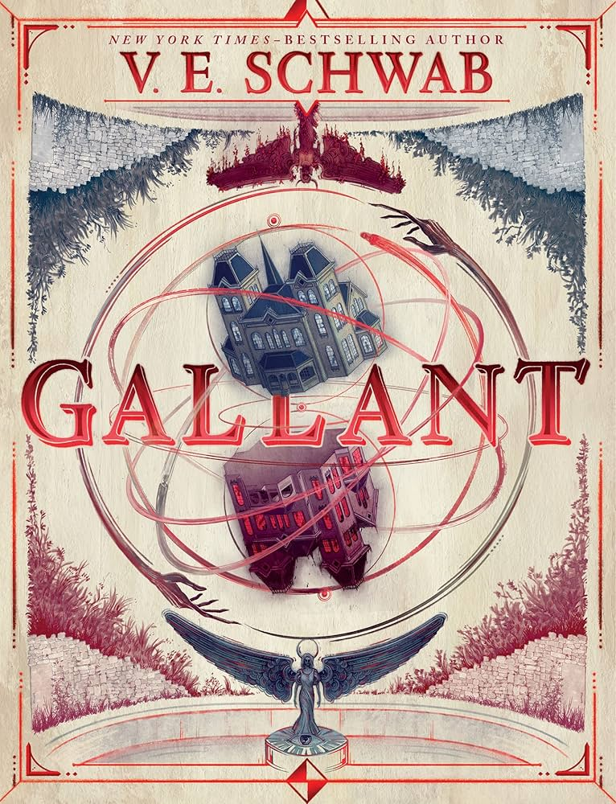
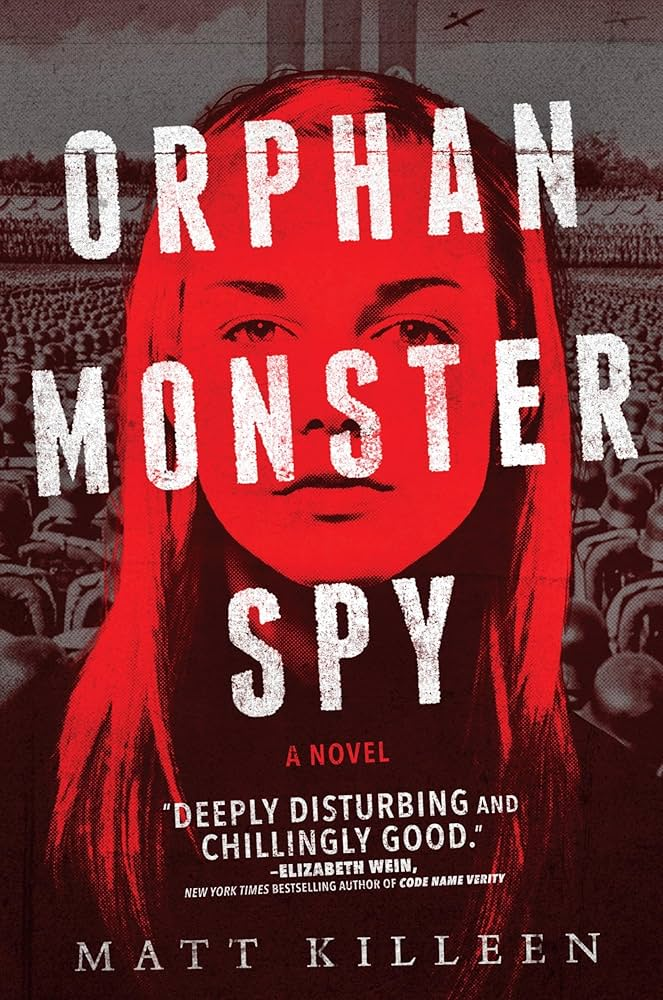

My Top Five Favorite Books
Bluebird by Sharon Cameron
Bluebird is a historical fiction novel set after the second World War. It follows a girl named Eva, who grew up surrounded by Nazi ideals but rejects them and seeks justice for those the Nazis hurt.
Buy Bluebird here. We Are All So Good At Smiling by Amber McBride
We Are All So Good At Smiling is a novel in verse, combining elements of fairy tales, struggles with mental health, and poetry. Its main character is named Whimsy, and she deals with depression and grief from losing her brother.
Buy We Are All So Good At Smiling here. Gallant by V.E. Schwab
Gallant is an eerie fantasy book narrated by a girl named Olivia. She is an orphan who is summoned to her family's mansion only to find that no one there sent the letter asking for her. She doesn't speak but does become determined to figure out the mystery behind the house and the family living in it.
Buy Gallant here. The Song of Achilles by Madeline Miller
The Song of Achilles is a beautifully written novel that retells the story of the Greek hero Achilles through the eyes of his lover, Patroclus.
Buy The Song of Achilles here.
Orphan Monster Spy by Matt Killeen
Orphan Monster Spy follows a Jewish girl during Nazi Germany who, after her mother dies, is recruited to infiltrate a Nazi boarding school and befriend one of the girls there to steal her family's secrets. It has a sequel, Devil Darling Spy.
Buy Orphan Monster Spy here. 